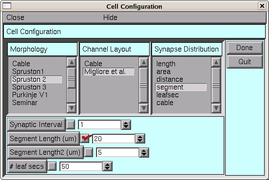
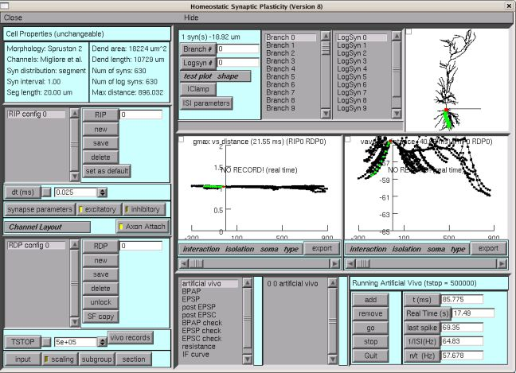

This is the readme for the model associated with the paper Rabinowitch I, Segev I (2006) The interplay between homeostatic synaptic plasticity and functional dendritic compartments. J Neurophysiol 96:276-83 These files were supplied by Dr Ithai Rabinowitch. The basic idea is: 1. Each simulation is given a RIP number and each RIP has several RDPs. RIP is a list of run-independent parameters such as the type of active channels on the dendrites. RDP is a list of run-dependent parameters (e.g. the simulation time). This allows you to set up a general RIP configuration and then run several RDP variations on it. The RIP and RDP parameter panels are at the top left. 2. Even above the RIP category is the neuron structure and channel file which are selected just before entering the main gui. 3. There are several types of simulation programs such as EPSP (which measures individual EPSP amplitudes for each synapse). These are chosen in the panel in the bottom. 4. It is possible to pre-program the simulation to run several simulations in sequence (if you want to leave the computer to work overnight and run different simulations one after the other). Usage: Download and extract the archive. Then under unix/linux: ----------- cd main nrnivmodl ../mechanisms nrngui main.hoc In the first selection window choose Spruston2 (not 3) and in the Migliore2 Channel layout and Segment length 20.  Then click 'Done'. You will be able to get 6 simulation configurations (RIP0: RDP0-5) that do the following (the simulations are quite long): RDP 0: runs in 'frozen' mode, i.e. no plasticity. This is used to get a profile of the average membrane potential at each dendritic site (at the end of the simulation choose Vavg in one of the two plot windows). RDP 1: runs with plasticity so that at the end you also get gmax values that are different from gmax0 RDP 2-5 start with the gmax distribution of RDP1 (since I have already run this, their gmax0 is supposed to be stored). RDP 2: local HSP RDP 3: frozen with the gmax0 obtained from RDP2's final gmax. RDP 4: global HSP RDP 5: frozen with the gmax0 obtained from RDP4's final gmax. --- Select "artificial vivo", click "add" and "go". While it is running you can select Interaction -> distance -> gmax and Interaction -> distance -> vmax in the graph windows, then your simulation will look like this:  I would suggest that you create a new RDP and just set a much shorter simulation time (TSTOP under the RDP list). You can then run it to make the result files (under for example ./records/files/ri05-Migliore2-seg-1-20/RIP-0/RDP-0/ ) accessible without having to run the whole simulation. If you want interesting things to happen in the short time, you can change the time constant of the plasticity mechanism. Create a new RIP configuration (or delete the existing one) and change the time scale parameter in the synapse parameter dialog box (just under the RIP list).